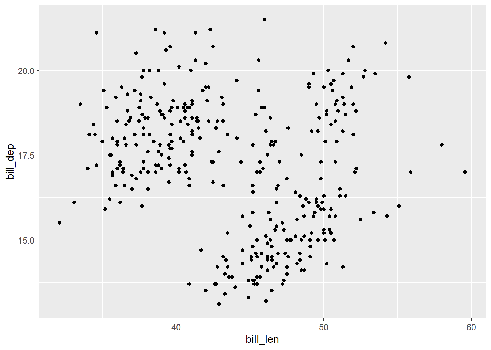
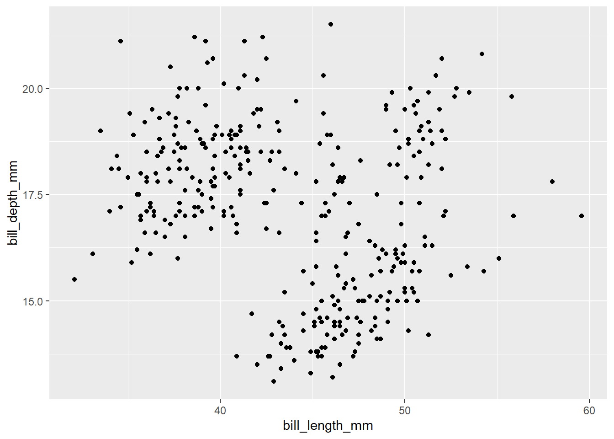

library(tidyverse)
df <-
palmerpenguins::penguins1 マークダウンの基本
1.1 準備
- 本書で使う処理のため，まず
tidyverseパッケージを読み込む - 使用するデータは
palmerpenguinsパッケージのpenguinsデータ- ここではオブジェクトの名前を
dfとして格納する。 パッケージ名::パッケージ中のデータ，パッケージ名::関数()でlibrary(パッケージ名)で読み込んでいなくても直に読み出せる，
- ここではオブジェクトの名前を
1.2 コードと結果の表示に関するチャンクオプションの設定
技術系同人誌では，コードとその実行結果について，全て示したい場合や一部だけ示したい場合がある。ここでは，考えられるパターンのそれぞれについてQuartoでどう指定するかを解説する。
- 公式ドキュメントの参照箇所
チャンクオプションの付け方で実行の有無，出力およびコードの表示・非表示がコントロールできる。〇はあり，×はなしであることを示している。
- チャンクオプションの記述例
#| eval: falseのように，#|の後にオプションとのそのtrueまたはfalseなどを指定する
```{r}
#| eval: false
1 + 1
ggplot(df) +
geom_point(aes(bill_length_mm, bill_depth_mm))
```- チャンクオプションと実行後パターンの対応一覧
| チャンクオプション | 実行 | 出力 | コード |
|---|---|---|---|
| echo: false | 〇 | 〇 | × |
| results: hide | 〇 | ×(図はあり) | 〇 |
| results: hide fig-show: hide | 〇 | × | 〇(1) |
| output: false | 〇 | × | 〇(2) |
| include: false | 〇 | × | × |
| eval: false | × | × | 〇 |
| echo: fenced | 〇 | × | 〇（チャンク） |
{r} |
× | × | 〇（チャンク） |
様々なパターンの記述例
- デフォルトの設定なので，必要なチャンクオプション特になし
コード表示
1 + 1[1] 2ggplot(df) +
geom_point(aes(bill_length_mm, bill_depth_mm))
チャンクでの書き方
```{r}
#| echo: false
1 + 1
ggplot(df) +
geom_point(aes(bill_length_mm, bill_depth_mm))
```コード表示：なし
[1] 2
チャンクでの書き方
```{r}
#| results: hide
1 + 1
ggplot(df) +
geom_point(aes(bill_length_mm, bill_depth_mm))
```コード表示
1 + 1
ggplot(df) +
geom_point(aes(bill_length_mm, bill_depth_mm))チャンクでの書き方
```{r}
#| results: hide
#| fig-show: hide
1 + 1
ggplot(df) +
geom_point(aes(bill_length_mm, bill_depth_mm))
```コード表示
1 + 1
ggplot(df) +
geom_point(aes(bill_length_mm, bill_depth_mm))チャンクでの書き方
```{r}
#| output: false
1 + 1
ggplot(df) +
geom_point(aes(bill_length_mm, bill_depth_mm))
```コード表示
1 + 1
ggplot(df) +
geom_point(aes(bill_length_mm, bill_depth_mm))チャンクでの書き方
```{r}
#| include: false
1 + 1
ggplot(df) +
geom_point(aes(bill_length_mm, bill_depth_mm))
```コード表示：なし
- 単にコードを表示したいだけの時に便利
チャンクでの書き方
```{r}
#| eval: false
1 + 1
ggplot(df) +
geom_point(aes(bill_length_mm, bill_depth_mm))
```コード表示
1 + 1
ggplot(df) +
geom_point(aes(bill_length_mm, bill_depth_mm))- 公式ドキュメントFenced Echoを参照
チャンクでの書き方
```{r}
#| echo: fenced
1 + 1
ggplot(df) +
geom_point(aes(bill_length_mm, bill_depth_mm))
```チャンク表示
```{r}
1 + 1
ggplot(df) +
geom_point(aes(bill_length_mm, bill_depth_mm))
```[1] 2
{r}をさらに{}で囲んで{r}と2重に書く
チャンクでの書き方
```{r}
1 + 1
ggplot(df) +
geom_point(aes(bill_length_mm, bill_depth_mm))
```- qmd上は上記書き方のみで「実行×|出力×|コード〇（チャンク表示）」が実現できる
- ただし解説目的で上記出力に
{r}を表示させるためには,````(4 backticks)で囲んで{{{r}}}と書く必要がある
- ただし解説目的で上記出力に
チャンク表示
```{r}
1 + 1
ggplot(df) +
geom_point(aes(bill_length_mm, bill_depth_mm))
```1.3 脚注
本文中に[^ここに数字や文字]と書き，別途内容を記述することで，脚注(footnote)をつけることができる。
| 見え方 | 書き方 |
|---|---|
| 基本の脚注1 | 基本の脚注[^1] |
| [ ]内は文字でもよい2 | [ ]内は文字でもよい[^word] |
| 脚注内容を本文中に3 | 脚注内容を本文中に^[直接[ ]内に内容を書く] |
| 見え方と書き方で脚注番号が異なることも4 | 見え方と書き方で脚注番号が異なることも[^2] |
| 脚注を複数行に分ける5 | 脚注を複数行に分ける[^multiple] |
脚注内容
[^1]: 脚注の内容を本文とは別に書く
[^word]:文字でも脚注番号に変換される
[^2]: これまでの脚注の文字数字とかぶらなければ自動で連番の数値に変換される
[^multiple]: 複数行書くためにインデントで区別する。以下1行ずつ空ける必要あり。
2段落目
3段落目
4段落目
【補足】
本来は[^multiple]で以下のように書きたかったが，pdfでエラーになるので省略
> { }でコードも書ける
> { 1+1 }
ここが脚注の記述内容
1.4 セクションへのリンク
| 見え方 | 書き方 |
|---|---|
| Chapter 3 | [@sec-caution] |
| 3 | [-@sec-caution] |
| セクション 3 | [セクション -@sec-caution] |
| 3章 | [-@sec-caution]章 |
| 3 | [-@sec-caution 章] |
| 注意事項 | [注意事項](#sec-caution) |
1.5 図表へのリンク
| 見え方 | 書き方 |
|---|---|
| Figure 2.1 を参照 | @fig-zu を参照 |
| 図 2.1 を参照 | [図 -@fig-zu] を参照 |
| Table 2.1 を参照 | @tbl-hyo を参照 |
| 表 2.1を参照 | [表 -@tbl-hyo]を参照 |
1.6 コールアウト
- 公式ドキュメントの参照箇所
1.6.1 基本の型
::: {.callout-note}
ここにテキスト
:::
Note
ここにテキスト
::: {.callout-note}
ここにテキスト
:::
Tip
ここにテキスト
::: {.callout-note}
ここにテキスト
:::
Warning
ここにテキスト
::: {.callout-note}
ここにテキスト
:::
Caution
ここにテキスト
::: {.callout-note}
ここにテキスト
:::
Important
ここにテキスト
1.6.2 見え方の変更
::: {.callout-note}
#### メモ
タイトルを変更
:::
メモ
タイトルを変更
::: {.callout-note collapse="true"}
#### 折りたたみもできる
ここにテキスト
:::
折りたたみもできる
ここにテキスト
::: {.callout-note}
#### メモ
アイコンなし
:::::: {.callout-note appearance="simple"}
#### シンプルに
ここにテキスト
:::
シンプルに
ここにテキスト
::: {.callout-note appearance="minimal"}
#### シンプルでアイコンなし
ここにテキスト
:::1.6.3 コールアウトへのリンク
Note 1.1
ここにテキスト
Note 1.1 を参照
1.7 MacのPCのキーボード記号の意味
Quartoの公式ドキュメントでは，当たり前のように使われているので，知らないと読み解けない
Apple公式の説明
- Macのメニューに表示される記号
- Mac のキーボードショートカット (記号がコピペできる)
| 意味 | 記号 |
|---|---|
| Commandキー | ⌘ |
| Shiftキー | ⇧ |
| Optionキー | ⌥ |
| Controlキー | ⌃ |